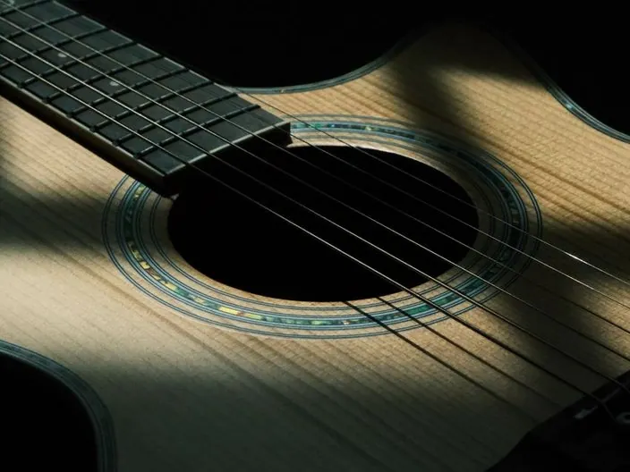
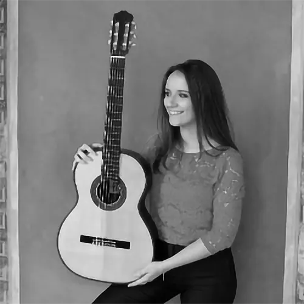
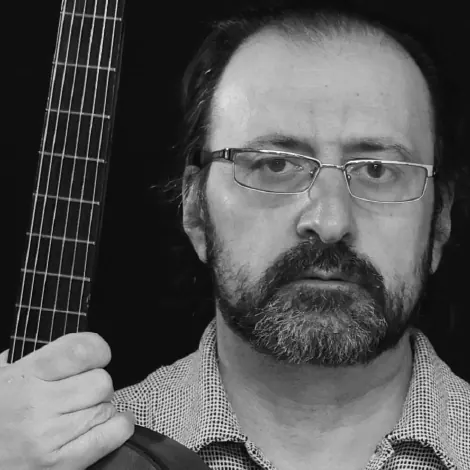
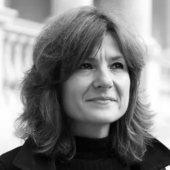

Chitarra

Categoria B: solisti (Chitarra)
- B1 Classe 2014 e anni successivi Durata massima 5 minuti
- B2 Classe 2012-2013 Durata massima 6 minuti
- B3 Classe 2010-2011 Durata massima 8 minuti
- B4 Classe 2008-2009 Durata massima 10 minuti
La Commissione

Elena Bellinzona
Elena Bellinzona ha frequentato il Liceo Classico Federico Delpino di Chiavari e, nel 2017, si è iscritta al Conservatorio Niccolò Paganini di Genova, dove ha conseguito il Diploma Accademico di II livello in chitarra classica con la valutazione di 110/110.
Nel corso della sua formazione ha partecipato a diverse masterclass, tra cui un masterclass di chitarra classica solista presso l'Accademia Chigiana di Siena, sotto la guida del Maestro Oscar Ghiglia, e altre masterclass tenute dal Maestro Andrea De Vitis a Pistoia. Ha inoltre seguito lezioni con celebri Maestri quali Gianpaolo Bandini e Bruno Giuffredi. Ha partecipato a numerosi concorsi nazionali e internazionali, ottenendo il II posto al Concorso di S.M.L. nella categoria gruppi di Musica da Camera. Attualmente, Elena Bellinzona insegna privatamente in diverse scuole di musica, tra cui l’Accademia Musicale Giuseppe Verdi di Chiavari, la Scuola di Musica Depietri di Casarza Ligure e la Scuola di Musica Pucciarelli di Lavagna.
Mauro Bonelli
Diplomato in Chitarra e Composizione, svolge da molti anni un'intensa attività didattica e artistico-musicale, ha insegnato Chitarra nei conservatori di musica "N.Rota" di Monopoli (BA) e "A.Vivaldi" di Alessandria, all'Accademia di Musica Moderna" di Milano, è stato inoltre docente di Composizione chitarristica ai corsi di Verbania, di Canto corale e Musica d'insieme presso il Liceo Coreutico - musicale "S.Pertini" di Genova, è titolare della cattedra di Chitarra all' I.C di Casarza Ligure; musicista eclettico Mauro Bonelli ha collaborato, in qualità di arrangiatore ed esecutore a produzioni con artisti internazionali quali: Amii Stewart, Lou Reed, Igudesman & Joo, Pat Metheny, Stefano Bollani ed Andrea Bocelli.
Attivo anche nella "early music" e nelle interpretazioni filologiche sino all'800 ha collaborato con specialisti del settore come la soprano Maurizia Barazzoni ed il liutista e direttore d'orchestra Sandro Volta insieme al quale nel 2007 ha pubblicato "Opere per due chitarre" di Ferdinando Carulli per la rivista Gendai Guitar di Tokio. Collabora ormai da diversi anni con l'orchestra del teatro Carlo Felice di Genova con la quale, ha avuto il privilegio di suonare nel 2017, in occasione della rappresentazione del capolavoro di L.Bernstein "West Side Story" musical diretto dall' inglese Whayne Marschall.
Le composizioni di Mauro Bonelli, come le produzioni discografiche, sono state recensite dalle più importanti riviste del settore (Gendai Guitar-Giappone, Suonare News e Guitart-Italia, Special Klassic-Germania, ) ed eseguite in Italia, Svizzera, Inghilterra, Irlanda, Brasile, Corea de Sud, Cina e Venezuela. Altre composizioni con clavicembalo sono state inserite nell'importante catalogo dell'Associazione Clavicembalistica Bolognese "Il Clavicembalo nella Musica Contemporanea Italiana". Ha composto inoltre "Epico 2010" per "piccola" orchestra commissionato da "Genova Palazzo Ducale Fondazione per la Cultura"ed "Aforisma Suite" per due chitarre e orchestra eseguito presso il teatro Niccolini di San Casciano (FI). Nel 2018 è stato invitato alla "Royal Academy of Music" di Londra e successivamente all'Università "Simòn Bolivar" di Caracas (Venezuela) per assistere all'escuzione dei suoi "Tre Capricci" per chitarra sola. E' Presidente di commissione al Concorso Chitarristico Internazionale "Città di Stresa".

Gabriella Solari
Gabriella Solari, dopo aver conseguito il Diploma di Maturità in Arti Applicate si laurea presso l’Ateneo genovese in Lettere su una tesi storico musicale con il massimo dei voti e la lode. Si diploma brillantemente in chitarra, sotto la guida del M.° Giuseppe Briasco ed in Didattica della Musica presso il Conservatorio di Musica “N. Paganini” di Genova. In seguito si è perfezionata con i Maestri Guido Margaria e Guillermo Fierens per il repertorio moderno e nel repertorio antico su strumenti originali (liuto e chitarra barocca) con il M.° Ugo Nastrucci.
Nel 2000 presso il Consorzio Scuola di Alto perfezionamento musicale Città di Saluzzo (CN) consegue l’Attestato di qualifica professionale in Alto perfezionamento in musica antica in flauto diritto. Collabora con diversi ensemble ed incide nel ‘95 il C.D. “Musica Sacra, Laudi, Travestimenti e Madrigali Spirituali nell’Oratorio di S. Filippo Neri (1515 / 1595)” e nel 2001 il doppio C.D. “Nuove Laudi Ariose della Beatissima Vergine” per la casa discografica Tactus.
È stata coordinatore organizzativo del C.D.R.M. per il quale ha curato il progetto Favola musicale in qualità di direttore artistico, ideatrice dei testi teatrali e coordinatrice del gruppo Animazione e Musica. formatrice nei corsi di aggiornamento per insegnanti di scuole primarie e dell’infanzia. È stata docente di Pedagogia Musicale presso il Conservatorio “G. Verdi” di Como e presso il Conservatorio “A. Buzzolla” di Adria (RO) per la stessa cattedra nel Biennio Superiore di II livello. Svolge un’intensa attività di relatrice e pubblica vari testi e articoli sulla didattica musicale.
Dopo essere stata per anni docente di educazione musicale, ad oggi è docente di ruolo nell’Indirizzo Musicale per la disciplina di Chitarra, presso la Scuola Secondaria di I grado “G.B. Della Torre” di Chiavari (GE).
In veste di chitarrista e flautista dolce svolge varia attività concertistica di musica da camera.